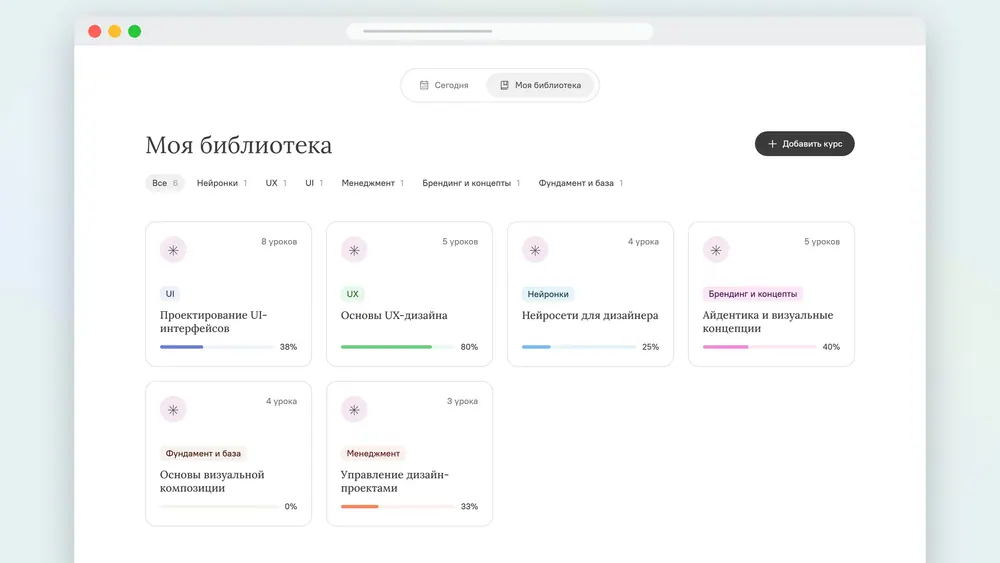
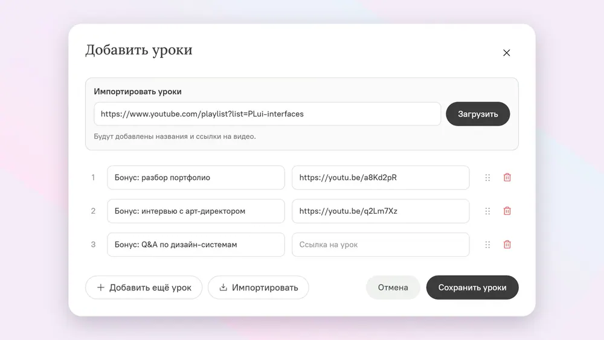

Studyspace
Личный учебный планер, который собирает курсы из YouTube, Яндекс Диска, VK Видео и Облака Mail в одну спокойную очередь уроков. Открываешь сайт — и сразу видишь, какой урок следующий.
Контекст
Курсы копятся, а до просмотра дело не доходит.
Учебные материалы разбросаны по видеоплатформам, облачным хранилищам и конспектам. Нужен был личный инструмент, который соберёт обучение в одном месте и поможет двигаться последовательно.
Задача
Простой и приятный планер — без регистрации для всех и социальных функций.
Библиотека курсов, очередь уроков, прогресс и быстрое изменение плана.
Что я сделала
- Сформулировала продукт, пользовательские сценарии и информационную структуру.
- Спроектировала экран «Сегодня» с текущим уроком и очередью, библиотеку курсов и страницу курса.
- Проработала теги направлений, прогресс, состояния и визуальные правила.
- Продумала добавление, редактирование, сортировку, удаление и завершение уроков.
- Проработала импорт уроков из YouTube и публичных материалов Яндекс Диска, а также ссылки на конспекты в Figma.
- Итеративно доводила реализацию через GitHub, Vercel и Supabase.
«Сегодня» вместо календаря
Никакой перегруженной сетки дат — просто следующий шаг.
Главный экран показывает один текущий урок с кнопками «Смотреть», «Конспект» и «Урок пройден», рядом — «Следующие уроки» с прогрессом курса. Пейзаж на фоне и белые карточки задают спокойный тон.
Библиотека
Карточки курсов с прогрессом и фильтр по направлениям.
У каждого направления своя пара цветов — для текста и фона тега и для заливки прогресса.

Курс и импорт
Вставить ссылку на плейлист — и уроки подтянутся сами.
На странице курса — список уроков с отметками «пройдено» и ссылками на материал, отдельный блок «Конспекты». При пакетном добавлении названия и ссылки уроков подтягиваются из плейлиста, остальные дописываются строками.



Облако и приватность
Вход по email, данные изолированы.
Данные хранятся в Supabase и изолированы политиками Row Level Security, сайт закрыт от индексации, есть резервные копии в JSON.
Принципы UX
- Минимум действий. Главное — открыть и продолжить.
- Очередь вместо календаря. Последовательность важнее дат.
- Быстрое возвращение. Следующий урок всегда на первом экране.

Обсудим ваш проект?
Опишите задачу в паре предложений — задам уточняющие вопросы и назову сроки и стоимость.